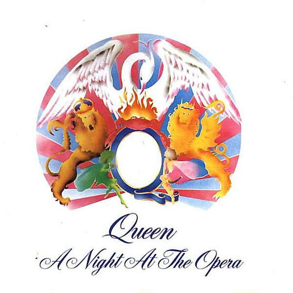
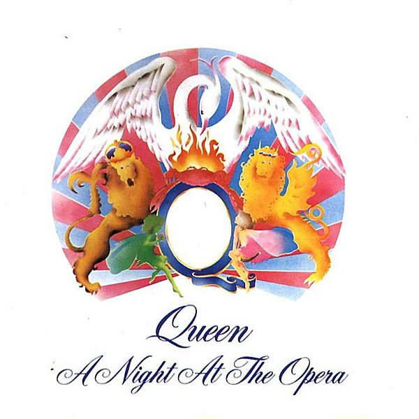

Перевод песни I'm in love with my car (Queen)
I'm in love with my car:
The machine of a dream
Such a clean machine
With the pistons a-pumpin'
And the hub caps all gleam
When I'm holdin' your wheel
All I hear is your gear
When my hand's on your grease gun
Oh it's like a disease son
I'm in love with my car
Gotta feel for my automobile
Get a grip on my boy racer rollbar
Such a thrill when your radials squeal
Told my girl I'll have to forget her
Rather buy me a new carburetor
So she made tracks sayin'
This is the end now
Cars don't talk back
They're just four wheeled friends now
When I'm holdin your wheel
All I hear is your gear
When I'm cruisin' in overdrive
Don't have to listen to no run of the mill talk jive
I'm in love with my car
Gotta feel for my automobile
I'm in love with my car
String back gloves in my automolove
Я влюблен в мой автомобиль:
Машина мечты,
Такая блестящая машина,
С поршнями и насосами
И сверкающими тарелками колес.
Когда я держу твой руль
И слышу только рев мотора,
Когда в моей руке шприц для смазки -
О, это болезнь, сынок!
Я влюблен в мою машину,
Хочу ощущать мой автомобиль,
Держись за защитную дугу!
Такой кайф слышать визг колес!
Я сказал своей девушке, что должен забыть ее,
«Лучше купи мне новый карбюратор»,
Так что она убежала, сказала
Что все кончено,
Машины не спорят,
Они настоящие четырехколесные друзья!
Когда я держу твой руль
И слышу только рев мотора,
Когда я включая ускоряющую передачу,
Мне плевать на автомобильные байки!
Я влюблен в мою машину,
Хочу ощущать мой автомобиль,
Я влюблен в мою машину,
Гоночные перчатки для моей автолюбви.